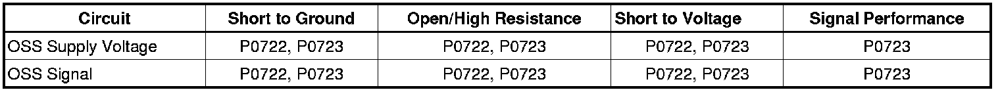
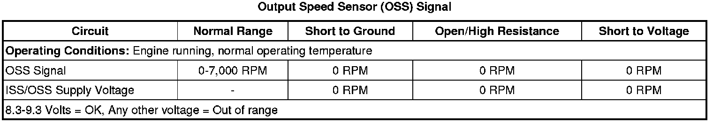
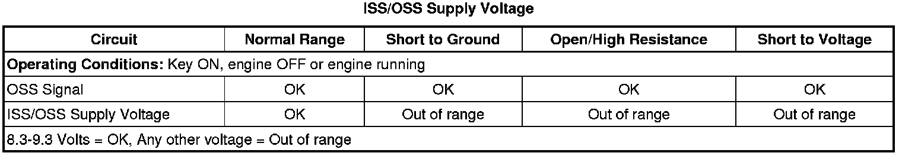

6L50/6L80/6L90 - Automatic Transmission
DTC P0722 or P0723
Diagnostic Instructions
* Perform the Diagnostic System Check - Vehicle (Initial Inspection and Diagnostic Overview) prior to using this diagnostic procedure.
* Review Strategy Based Diagnosis (Initial Inspection and Diagnostic Overview) for an overview of the diagnostic approach.
* Diagnostic Procedure Instructions (Initial Inspection and Diagnostic Overview) provides an overview of each diagnostic category.
DTC Descriptors
DTC P0722
- Output Speed Sensor (OSS) Circuit Low Voltage
DTC P0723
- Output Speed Sensor (OSS) Intermittent
Diagnostic Fault Information

Typical Scan Tool Data


Circuit/System Description
The automatic transmission (AT) input and output speed sensor (ISS and OSS) assembly each are part of a single harness. The OSS is a hall-effect type sensor. The OSS mounts to the control valve upper body assembly. The assembly connects to the control solenoid (w/body and TCM) valve assembly through a 3-wire harness and connector. The sensor faces the output shaft machined teeth surface. The sensor receives 8.3-9.3 volts on the input/output speed sensor (ISS/OSS) supply voltage circuit from the transmission control module (TCM). As the output shaft rotates, the sensor produces a signal frequency based on the machined surface of the output shaft. This signal is transmitted through the OSS signal circuit to the TCM. The TCM uses the OSS signal to determine line pressure, transmission shift patterns, torque converter clutch (TCC) slip speed and gear ratio.
Conditions for Running the DTC
P0722
* No ISS DTCs P0716 or P0717 active or have failed this key on.
* No OSS DTC P0723 is active or have failed this key on.
* Ignition voltage is between 8.6-18.0 volts.
* The engine speed is 500-7,500 RPM for at least 5 seconds.
* The TCM must receive a valid torque signal from the ECM.
* The engine torque is between 50-1,492 N.m (36-1,100 lb ft).
* Accelerator pedal position signal is valid.
* Transmission fluid temperature (TFT) is greater than 0°C (32°F).
* The selected range is not PARK or NEUTRAL.
* The transmission input speed is between 1,000-6,500 RPM.
* The engine speed is between 3,200-5,000 RPM.
* The calculated throttle position is greater than 8 percent.
P0723
* No ISS DTCs P0716 or P0717 active or have failed this key on.
* No OSS DTC P0722 is active or have failed this key on.
* No OSS DTC P0723 is active or have failed this key on.
* The engine speed is 500-7.500 RPM for at least 5 seconds.
* Greater than 6 seconds since last range change.
Conditions for Setting the DTC
P0722
* The TCM detects no output shaft speed when there is vehicle speed.
* The transmission output speed is less than or equal to 70 RPM for 4.5 seconds.
P0723
* The TCM detects an unrealistic drop in output shaft speed.
* ISS DTC P0723 has not failed this ignition.
* The transmission input speed has not changed by more than 500 RPM for 2 seconds.
* The transmission output speed has not changed by more than 500 RPM for 2 seconds.
* The transmission output speed is 1,000 RPM or greater for 2 seconds.
* The transmission output speed drops 1,200 RPM and does not recover for 1.5 seconds.
Action Taken When the DTC Sets
* The TCM freezes transmission adaptive functions.
* The TCM turns OFF all solenoids.
* The TCM turns OFF the TCC solenoid.
Conditions for Clearing the DIC/DTC
DTCs P0722 and P0723 are Type A DTCs.
Diagnostic Aids
Inspect the OSS, harness, connector and control solenoid (w/body and TCM) valve assembly pins for metallic debris and output shaft machined face for damage or misalignment. Proper torque of the OSS mounting bolt is critical to proper OSS operation. Use the terminal test kit for any test that requires probing the control solenoid (w/body and TCM) valve assembly harness connector or a component harness connector.
Reference Information
Schematic Reference
Automatic Transmission Controls Schematics (Electrical Diagrams)
Connector End View Reference
Component Connector End Views (Connector Views)
Electrical Information Reference
* Circuit Testing (Component Tests and General Diagnostics)
* Connector Repairs (Component Tests and General Diagnostics)
* Testing for Intermittent Conditions and Poor Connections (Component Tests and General Diagnostics)
* Wiring Repairs (Component Tests and General Diagnostics)
Description and Operation
Electronic Component Description (Electronic Component Description)
DTC Type Reference
Powertrain Diagnostic Trouble Code (DTC) Type Definitions (Diagnostic Trouble Code Descriptions)
Scan Tool Reference
Control Module References (Programming and Relearning) for scan tool information
Circuit/System Verification
Operate the vehicle at 16-32 km/h (10-20 mph) while observing the transmission OSS on the scan tool. The transmission OSS should vary with the vehicle speed and not drop out.
Circuit/System Testing
1. Turn the ignition ON.
2. Observe the transmission ISS/OSS supply voltage circuit status on the scan tool. The parameter should display OK.
• If the parameter does not display OK, disconnect the ISS/OSS connector from the control solenoid (w/body and TCM) valve assembly and recheck the scan tool display.
• If the transmission ISS/OSS supply voltage circuit status still displays OK, visually inspect the OSS, harness, connector, the control solenoid (w/body and TCM) valve assembly pins for metallic debris and output shaft machined surface for damage or misalignment. The OSS supply voltage should be 8.3-9.3 volts.
• Repair or replace the damaged components.
3. Perform the Control Solenoid Valve and Transmission Control Module Assembly Input Shaft Speed/Output Shaft Speed Input Test (Control Solenoid Valve and Transmission Control Module Assembly Input Shaft Speed/Output Shaft Speed Input Test) .
• The scan tool Transmission OSS parameter should display 100-400 RPM.
• If the Transmission OSS parameter is between 100-400 RPM, replace the ISS/OSS assembly.
• If no OSS RPM is displayed or the parameter is out of range, replace the control solenoid (w/body and TCM) valve assembly.
Repair Instructions
Perform the Diagnostic Repair Verification (Verification Tests) after completing the diagnostic procedure.
* Perform the Input and Output Speed Sensor Replacement (6L50/6L80/6L90 - Automatic Transmission) .
* Control solenoid (w/body and TCM) valve assembly - refer to Control Module References (Programming and Relearning) for replacement, setup, and programming.
* Perform the Control Solenoid Valve and Transmission Control Module Assembly Inspection (Control Solenoid Valve and Transmission Control Module Assembly Inspection) .
* Perform the Control Solenoid Valve and Transmission Control Module Assembly Input Shaft Speed/Output Shaft Speed Input Test (Control Solenoid Valve and Transmission Control Module Assembly Input Shaft Speed/Output Shaft Speed Input Test) .
* Perform the Service Fast Learn Adapts (Programming and Relearning) if internal transmission repairs are performed.